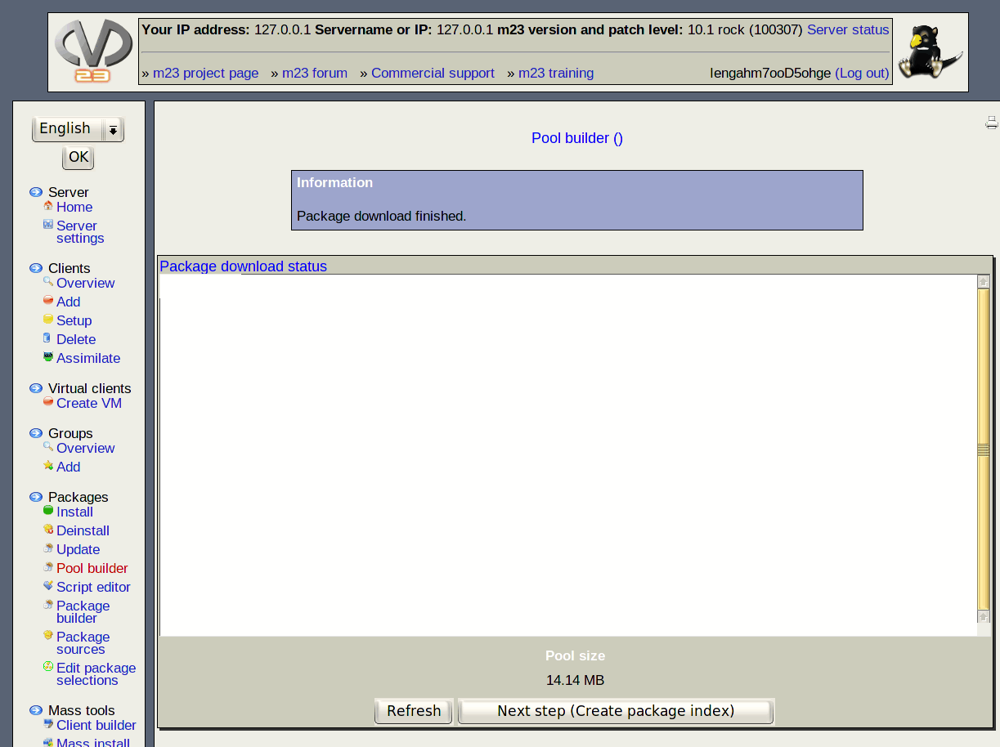

This window tracks the current download status. Hitting ''Refresh'' every now an then to get the latest informations concerning the download (if JavaScript is deactivated). Running or finished downloads will be tracked in the information window. After the download has finished, an index needs to be generated. Hitting ''Next step (Create package index)'' will do so - this task is only available after the download has finished.
dodger
2014-08-06